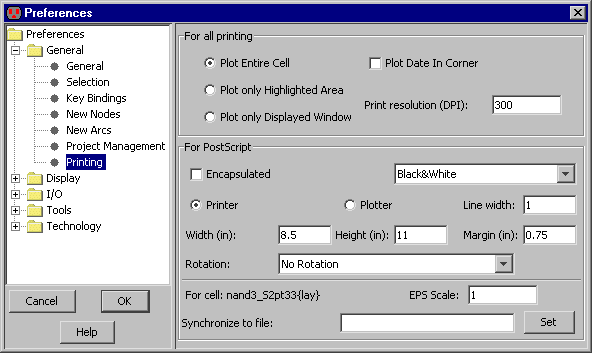

Для распечатки содержимого рабочего окна используют команду Print... меню (File).
Настройки распечатки можно посмотреть в Page Setup....
Альтернативой распечатывания являются команды меню (File / Export) PostScript..., HPGL, и PNG (Portable Network Graphics)....
Настройки PostScript находятся на закладке
"Printing" (File / Preferences..., "General" , "Printing" ).
|
Пункт "For all printing" включает несколько свойств.
По дефльту отмечено entire cell(ячейка полностью),
но возможны варианты, только выделенные объекты(print only highlighted area) или только те которые отображены(Displayed window).
|  |
Опция "Plot Date In Corner" выводит дополнительную информацию.
"Print resolution" определяет количество точек на дюйм(DPI).
Опции PostScriptс.
-
Пункт "Encapsulated" позволяет использовать PostScript в различных документах.
-
Так же на выбор представлена распечатка в цвете:
"Black&White" используется для шаблона слоя;
"Color" для цветного фона,
но без обработки перекрытий(потому, что "Color" не работает с изображением на непрозрачной подложке);
и
"Color Stippled" используется для отображения фактуры рисунка,
для более четкого отображения перекрытий.
-
Размеры распечатываемой страницы можно задать, выбрав Print и в пунктах Width(ширина) и
Height(высота) указать нужные значения.
Поле "Margin" определяет отступ от края бумаги.
Метрика для полей "Height", "Width", и "Margin" указана в дюймах.
-
Line width - длина PostScript линии.
-
Опция Rotation позволяет поворачивать объект при распечатки.
-
PostScript файлы могут быть синхронизированы с текущей ячейках.
Для этого надо нажать "Set" и указать имя PostScript(а),
которое связано с текущей ячейкой.
В дальнейшем при создании новых PostScript(ов),
Electric проверяет все синхронизированные ячейки с связанными файлами на диске.
Если не находит, то генерируется новый файл.